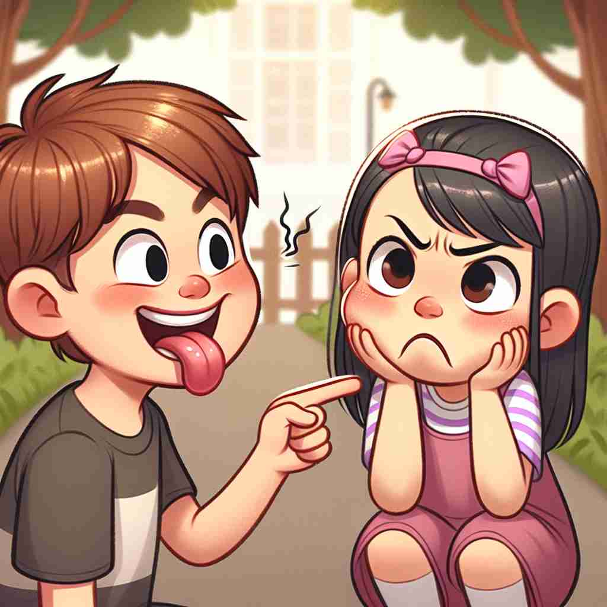

💬 It's fun to taunt a friend during a game. 在游戏中嘲弄朋友是很有趣的。

💬 He likes to taunt a friend when they play together. 他喜欢在和朋友玩的时候调侃对方。
💬 It's fun to taunt a friend during a game. 在游戏中嘲弄朋友是很有趣的。
💬 He likes to taunt a friend when they play together. 他喜欢在和朋友玩的时候调侃对方。
🧠 想象'taunt'是一种尖锐的语言'刺'，核心意义是用言语刺痛他人。无论是动词、名词还是形容词用法，都围绕着这种'刺痛'或'挑逗'的概念。记住这个核心意象，可以帮助你理解和记忆'taunt'的各种用法。
🔈 [tɔːnt]
🗝️ v. to say insulting things to someone in order to make them angry or upset 对某人说侮辱性的话以激怒或使其不安。
🎭 在一个热闹的操场上，一群孩子正在玩耍。其中一个男孩用嘲讽的语气对另一个孩子说道：'你连球都踢不进！'这个场景表现了'嘲讽'作为一种故意让人愤怒或不安的言语行为。
💬 The children taunted the new boy about his accent. 孩子们嘲笑新来的男孩的口音。
🌳 由词根 "taunt" 直接构成，表示嘲讽、奚落。词根来自中古英语，有挑战和嘲笑的含义。
💡 记忆 "taunt" 时，可以联想到 "t" 是 "tease"（取笑）的开头字母，"aunt" 可以联想成爱开玩笑的阿姨，通过这些词的结合可以记住 "taunt" 的意思是嘲讽。
🗝️ n. a remark made in order to anger, wound, or provoke someone 出于激怒、伤害或挑衅某人的目的而做出的评论
🎭 在一个学校的走廊里，有人贴了一张纸，上面写着对校冠军的讽刺话语：'也不过如此嘛。'这种话语像是在故意挑衅或伤害他人的感情，表现了'taunt'作为一句激怒或刺激他人的话。
💬 He ignored their taunts and kept walking. 他无视他们的嘲讽，继续走路。
🤔 将动词"嘲讽"的行为具象化为名词
🗝️ v. to provoke or challenge (someone) with insulting remarks 以侮辱性的言辞挑衅或激怒（某人）
🎭 在一个激烈的篮球比赛中，对手队的成员不断地向场上的另一位选手叫嚣：'你不敢突破我的防线！'这样的言语在挑衅对方，意图激怒或挑战对方，表现了'taunt'作为挑战或挑衅的行为。
💬 The protesters taunted the police, daring them to react. 抗议者嘲弄警察，挑衅他们做出反应。
🤔 从单纯的嘲讽发展为带有挑衅性质的言语
🗝️ adj. temptingly or provocatively on display 诱人地或挑衅地展现出来
🎭 在一家甜品店的橱窗中，摆放着一块块精致诱人的巧克力蛋糕，仿佛在对路过的人们说：'来尝尝我吧。'它们诱人的外观如同一种挑逗，展示出'乖僻或挑逗性地展示'的意味。
💬 The chocolate cake sat taunt on the counter, tempting everyone who passed by. 巧克力蛋糕在柜台上静静地摆着，诱惑着每一个路过的人。
🤔 从言语挑衅延伸到视觉上的诱惑或刺激